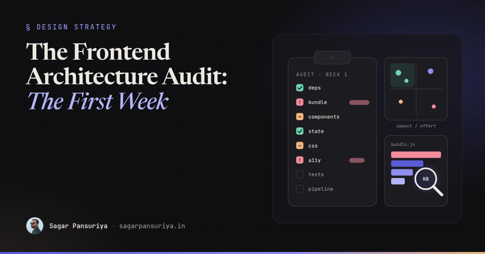
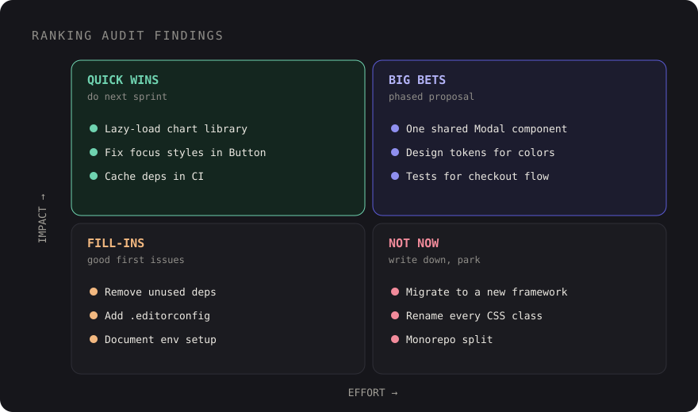

The Frontend Architecture Audit: What I Look at in the First Week


Picture the first Monday on a codebase you didn't build. The team says the frontend is "a bit messy". Builds take four minutes, nobody wants to touch the checkout, and there are three different modal components, each with its own bugs. Someone has asked you to "have a look and tell us what to fix".
That request is an architecture audit, whether anyone calls it one or not. Done well, it gives the team a shared, prioritised picture of where the frontend actually stands. Done badly, it's a list of opinions that reads like an attack on the people who built it, and nothing changes.
This is how I approach the first week: what to look at, how to look at it quickly, what the deliverable should look like, and how to present it so the team leaves the room motivated rather than defensive.
Ground rules before you open the code
Three things make the rest of the week go better.
- Ask what hurts first. Spend the first morning with the people who work in the code. "What do you avoid touching? What breaks most? What takes longer than it should?" Their answers tell you where to dig, and they often already know the answer.
- Learn the constraints. A two-person team shipping client work weekly needs a different plan than a product team of twelve. Budget, deadlines, browser support and who maintains what all shape what "good" means here.
- Measure, don't vibe. "The bundle is big" is an opinion. "The main entry is 410 KB gzipped, and 140 KB of it is a date library used on one page" is a finding. Collect numbers you can re-measure after fixes.
What to look at, area by area
1. Dependency health
Start here because it's fast and objective. Run npm outdated and npm audit (and composer outdated for a Laravel app). Look for major versions behind, packages with no releases in years, and multiple libraries doing the same job: two date libraries, two HTTP clients, a jQuery plugin next to Alpine. A tool like Knip finds unused dependencies, files and exports, which is often a surprisingly long list.
2. Bundle and performance
Build for production and look at what's in the output. For a Vite project, a visualiser plugin such as rollup-plugin-visualizer shows a treemap of every module. You're looking for large libraries pulled into the main entry, code that could be split per page, and assets that aren't optimised. Then check real-user data: PageSpeed Insights for Core Web Vitals, and a throttled DevTools session on the two or three most important pages. If there's no performance budget, note that as a finding in itself; I wrote about setting one up in performance budgets in CI.
3. Component structure and duplication
This is where most of the long-term cost lives. Look for:
- The same UI built several times (buttons, modals, dropdowns, form fields) with slightly different behaviour.
- Very large components or Blade views that mix data fetching, business logic and markup.
- No clear place for shared components, so every feature folder grows its own.
Two quick measurements help. Git churn shows which files change most, which is where complexity hurts:
git log --since="12 months ago" --format=format: --name-only \
| grep -E '\.(js|ts|vue|jsx|tsx|blade\.php|css)$' \
| sort | uniq -c | sort -rn | head -20And a copy-paste detector such as jscpd gives you a rough duplication number to track. High churn plus high duplication in the same folder is usually your top finding.
4. State management
Map where state lives: server-rendered props, Livewire properties, Alpine components, global stores, URL parameters, localStorage. The question isn't "is there a store library", it's "can a new developer tell where a piece of state is owned and how it changes". Symptoms of trouble: the same data fetched in several places, state synced manually between components, and bugs that only happen after navigating back.
5. CSS architecture
Check how styles are organised and how often people fight them. Look for !important counts, deeply nested selectors, a design token layer (or the lack of one), and how many shades of the "same" grey exist. In a Tailwind project, look for very long repeated class lists that should be components, and arbitrary values like text-[13px] that suggest the theme doesn't match the design.
6. Accessibility
You won't do a full audit in a week, but you can find the systemic issues. Run axe DevTools or Lighthouse's accessibility checks on key templates, then do a keyboard-only pass through the main flow: can you reach everything, see focus, open and close dialogs, submit forms? Automated tools only catch part of the problem, so the manual pass matters. Findings here are often cheap to fix because they come from a handful of shared components.
7. Testing
What exists, what runs in CI, and what the team trusts. A suite that's skipped because it's flaky is worse than a small suite that always passes. Note which critical flows (sign-up, checkout, the one form that makes money) have no automated coverage at all.
8. Build and deploy pipeline
Time a clean install and build. Read the CI config. How long from merge to production? Is there a preview environment? Can you roll back? Are environment variables and secrets handled consistently? Slow, fragile pipelines tax every change, so they tend to rank high on impact.
9. Developer experience
Try to set the project up from the README on a fresh machine and note every step that isn't documented. Check for linting and formatting in CI, editor config, type checking, and how long the local dev server takes to start. Onboarding friction is a real cost, it's just paid by the next hire.
The audit checklist
This is the table I work through. Each row gets a status (fine, concern, problem) and a line of evidence.
| Area | Check | Quick way to measure |
|---|---|---|
| Dependencies | Outdated, vulnerable, unused, duplicated | npm outdated, npm audit, Knip |
| Bundle | Entry size, splitting, heavy libraries | Production build + visualiser treemap |
| Performance | LCP, INP, CLS on key pages | PageSpeed Insights, throttled DevTools |
| Components | Duplication, oversized files, shared library | Git churn, jscpd, folder review |
| State | Clear ownership, duplicated fetching | Map state sources for one feature end to end |
| CSS | Tokens, specificity, one-off values | Grep for !important and arbitrary values |
| Accessibility | Keyboard, focus, labels, contrast | axe DevTools + keyboard-only pass |
| Testing | Coverage of critical flows, flakiness | CI history, list of untested flows |
| Pipeline | Build time, previews, rollback | Time a clean build, read CI config |
| DX | Setup time, linting, docs | Fresh setup from the README |
The deliverable: findings ranked by impact and effort
Don't hand over a 40-page document. Nobody reads it, and it buries the three things that matter under the thirty that don't. What works better is a short document with a consistent format per finding:
- What: one sentence describing the issue.
- Evidence: the number, file or screenshot that proves it.
- Impact: who it hurts (users, developers, the business) and how much.
- Effort: a rough size (hours, days, weeks), not an estimate anyone will be held to.
- Recommendation: the smallest change that improves it.
Then plot the findings on an impact/effort grid. It turns a list of problems into a plan.

Quick wins go into the next sprint. Big bets need a proper proposal with a phased plan, because "rewrite the component library" isn't a ticket. Fill-ins are good first issues for new team members. "Not now" items are written down so people know they were considered and deliberately parked.
End the document with a one-page summary: the top five findings, the three quick wins you'd start with, and the metrics you'll re-measure in a month to show progress.
Presenting it without blame
Every messy codebase was built by reasonable people under real constraints: deadlines, changing requirements, a framework that was the right choice five years ago. If your audit reads as "who did this?", the people you need to fix it will spend the meeting defending themselves.
- Describe the code, not the author. "The checkout component handles six responsibilities" rather than "someone put everything in one file". Never mention names from
git blame. - Acknowledge what works. Start with the things that are genuinely solid. There always are some, and saying so makes the rest credible.
- Explain the context. "This pattern made sense when the app had three pages" frames the issue as the product outgrowing its structure, which is usually true.
- Share it with the team before leadership. Walk the developers through it first, correct anything you got wrong, and let them shape the priorities. Then present it together.
- Tie findings to outcomes. Stakeholders don't care about duplicate modals. They care that each new form takes three days and ships with inconsistent bugs.
The same principles apply to day-to-day feedback; I went deeper on that in frontend code reviews that teach.
A first-week plan
- Monday: interviews with the team, set up the project from scratch, read the README and CI config.
- Tuesday: dependencies, bundle analysis and performance measurements.
- Wednesday: component structure, churn, duplication and state mapping.
- Thursday: CSS, accessibility pass, testing and pipeline review.
- Friday: write up findings, plot the grid, review with the team.
By the end of the week, "the frontend is a bit messy" has turned into a short list of specific problems, each with evidence, a size and a proposed first step. That's what makes an audit useful: not the number of problems found, but how many of them the team actually fixes.
Discussion